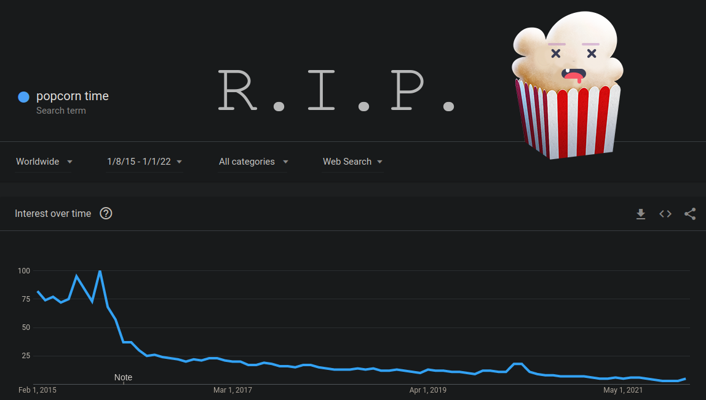

Popcorn Time, concorrente pirata da Netflix, é encerrado

O Popcorn Time, que conquistou milhões de utilizadores em todo o mundo ao oferecer acesso gratuito a filmes e séries de forma ilícita, foi encerrado esta terça-feira. Em e-mail enviado à Bloomberg, os desenvolvedores responsáveis pela app pirata confirmaram o fim do serviço.
Lançado em 2014, o streaming ilegal logo conquistou uma enorme base de fãs, pelo conteúdo grátis e a facilidade de uso, incomodando os gigantes do setor. Em 2015, o cofundador da Netflix, Reed Hastings, chegou a apontar o serviço pirata como um dos principais concorrentes da plataforma comandada por ele.
Porém, o interesse pelo Popcorn Time começou a diminuir com o passar do tempo e a chegada de novas opções legais ao mercado, contribuindo para a queda nos valores das assinaturas. Um gráfico postado no site do "Netflix pirata" mostra uma brusca redução na procura pelo programa no Google.
Como indicado pela própria página, o encerramento das atividades do Popcorn Time deve-se à baixa procura pelo serviço nos últimos anos e não aos diversos processos na justiça contra a plataforma. Desde a sua estreia, o software enfrentou várias ações por conta da pirataria de filmes e séries, chegando a ser interrompido em algumas ocasiões.
Um ano após o lançamento, os criadores da plataforma abandonaram o projeto, por conta dos problemas jurídicos. Mas o aplicativo de código aberto continuou a ser oferecido por outros desenvolvedores que compraram a ideia e lançaram novas versões.
Não Perca

Os melhores carros familiares a preços muito acessíveis
Ler Mais >>

Rainbow Six Extraction chega ao Xbox Game Pass no lançamento
Ler Mais >>

Adolescentes transmitiram vídeo a praticar atos sexuais usando Live do Facebook
Ler Mais >>

As novas colunas da XBOOM que chegam para dominar a concorrência
Ler Mais >>